Concurrentie analyse
Ik heb volgende websites bekeken:
- https://www.rideonfilmfestival.com/
- http://www.japan-square.be/filmfestival/
- https://www.filmfestival.be/nl
- https://facts.be/
- https://www.flagey.be/nl/
Ride On
 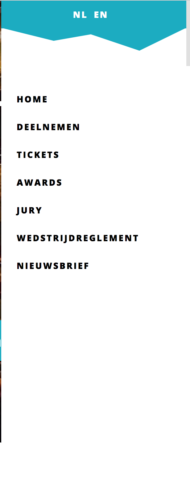
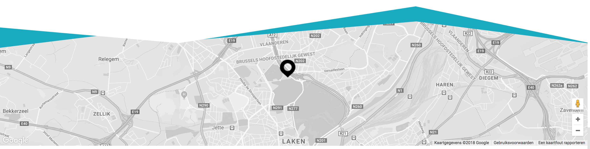
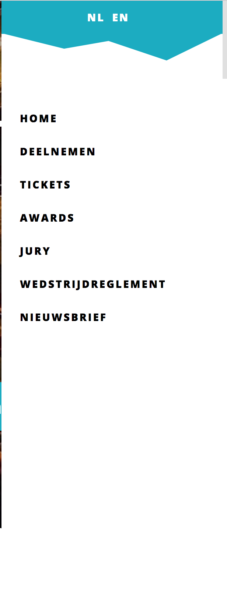
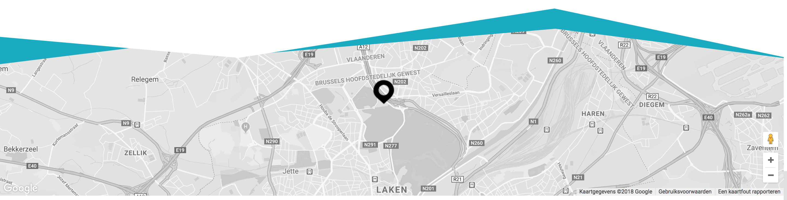
Qua functionaliteit is deze website heel simpel. Het menu is verborgen voor een simplistischer design, dat uitklapt, en je zo brengt naar de verschillende paginas van de website. Het valt op deze website vooral op dat het hoofddoel is om mensen aan te zetten om tickets te kopen (call-to-action: koop tickets) a.d.h.v. een grote, opvallende knop. Ik vind de Google Maps plugin aan de onderkant van de pagina ook een leuke toevoeging.
Japan Square
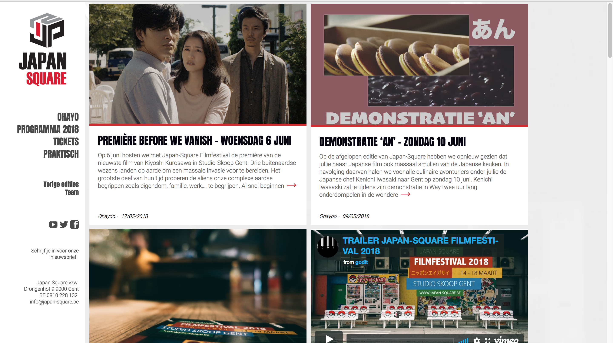 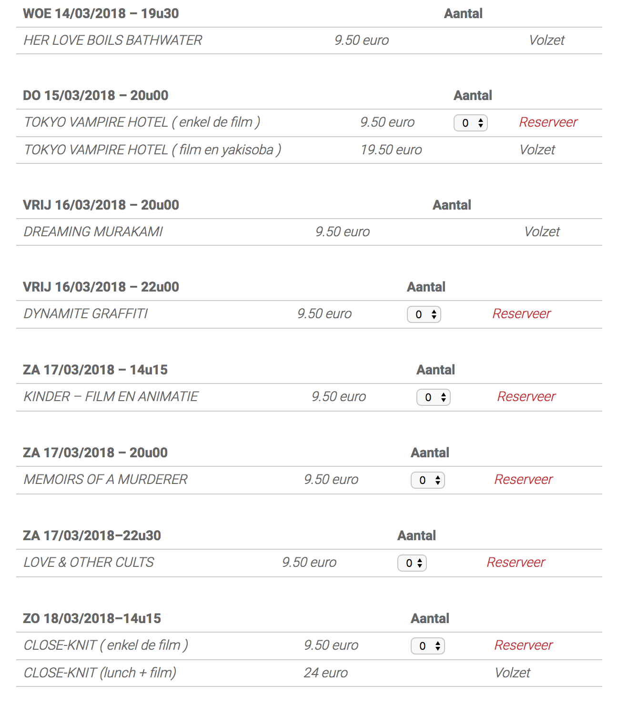Op deze website wordt gebruik gemaakt van een gridsysteem, ideaal voor het plaatsen van afbeeldingen met kleinere hoeveelheden tekst. Deze linken dan naar een artikel. Zo blijft de homepage overzichtelijk. Bij de ticketreservatie wordt gebruik gemaakt van een dropdown voor het aantal plaatsen te selecteren, en alle voorstellingen staan chronologisch geordend in een lijst.
Film Fest Gent
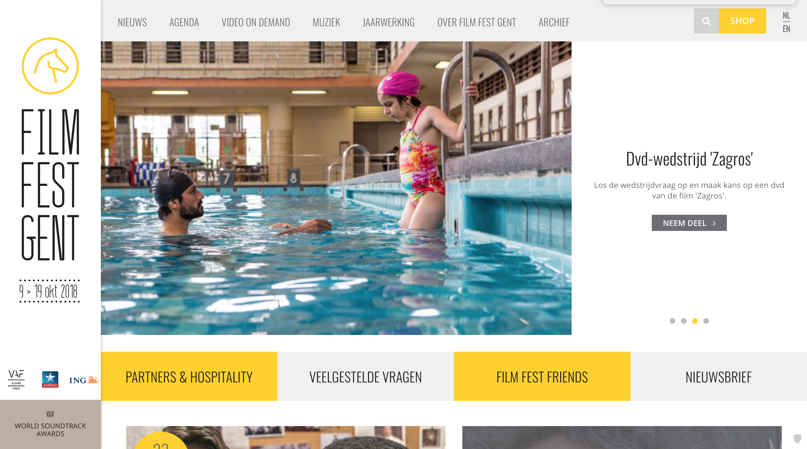Op de homepagina wordt de aandacht onmiddelijk gegrepen door de slideshow, een leuke functionaliteit.
FACTS
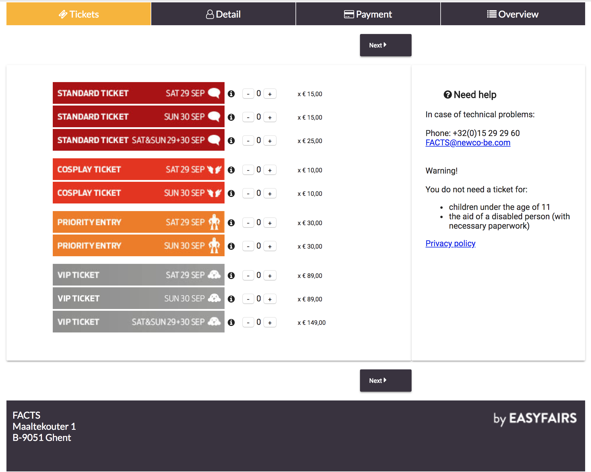 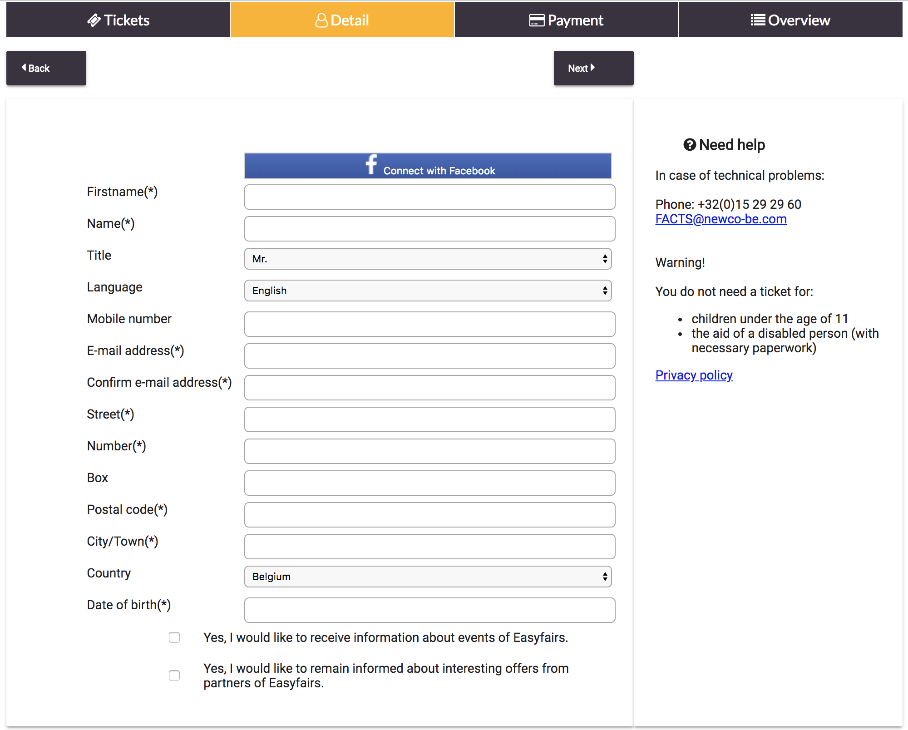 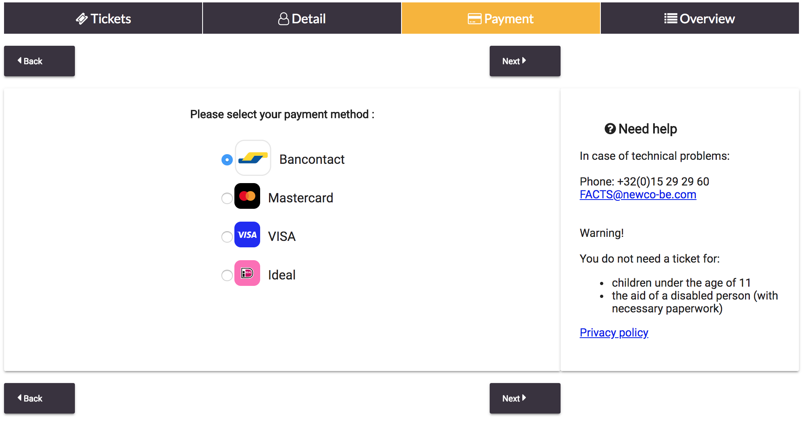 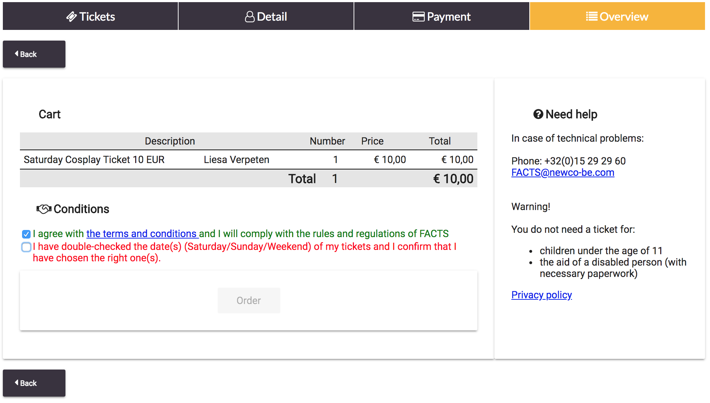 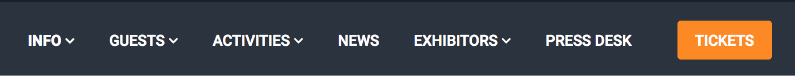FACTS is eerder een conventie dan een festival, maar het ticketingsysteem is heel aangenaam en lijkt op die van Japan Square. Je ziet steeds waar je je bevindt in het proces, de lijststijl voor de ticketselecties zijn duidelijk, en op het einde kan je nog eens dubbelchecken of je de juiste selectie hebt gemaakt. De navigatiebalk is straight to the point, duidelijk en makkelijk te navigeren.
Flagey
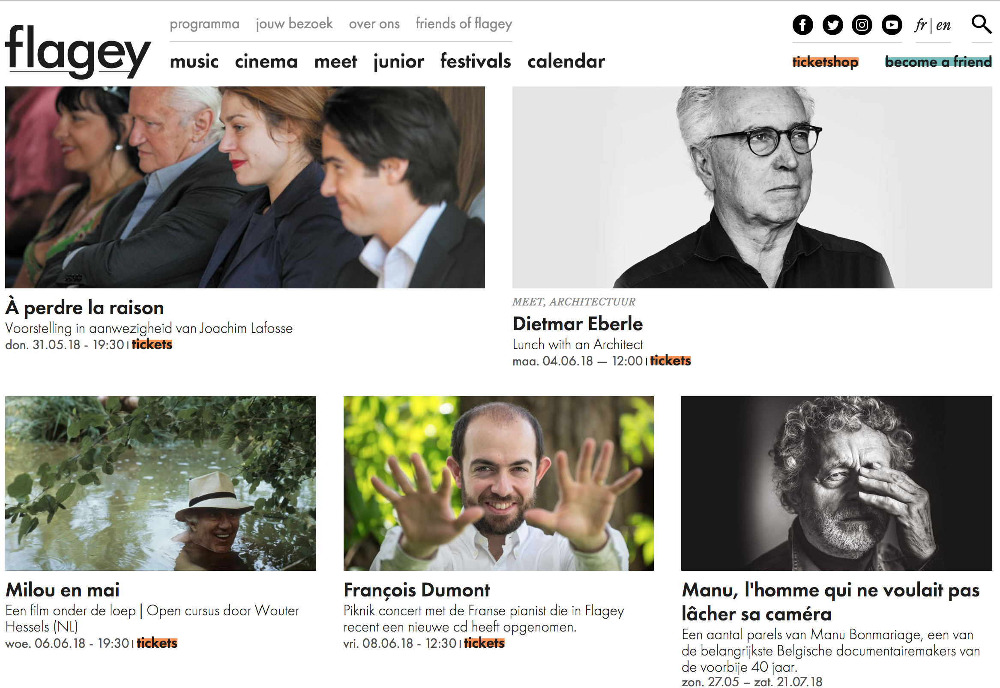Flagey maakt ook gebruik van een gridsysteem. Het ticketingsysteem is hetzelfde als FACTS. Aangezien alle evenementen gelijkaardige systemen hebben, kan ik er van uitgaan dat dit het beste systeem is.